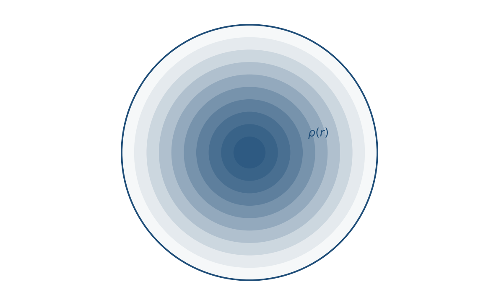
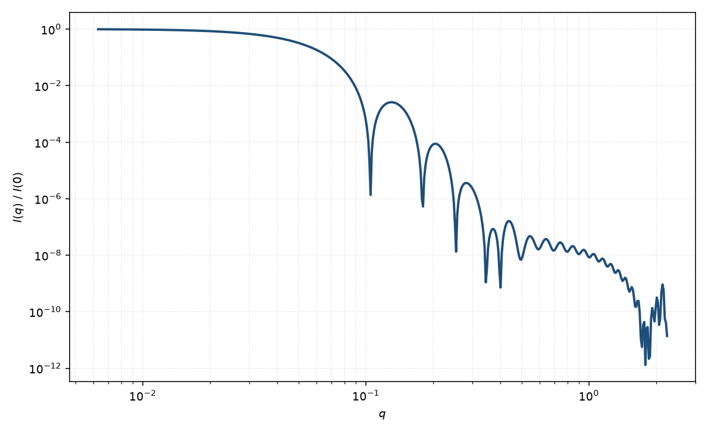

径向 SLD 球
spherical SLD
适用场景
当球对称粒子的散射长度密度沿半径连续变化、不能用两三层常数壳概括时，用任意 $\rho(r)$ 的径向傅里叶变换。对象包括扩散界面、溶胀微凝胶的平滑剖面、合金颗粒的径向梯度、以及由对比变分重建的 $\rho(r)$。
实践中 $\rho(r)$ 仍要参数化（分段线性、样条、tanh 界面、多层离散）。“任意”指模型不再预设核壳跳变，而不是完全非参数反演——后者更接近 IFT，需正则化。
物理图像
球对称下，散射振幅就是 $\rho(r)-\rho_{\mathrm{solv}}$ 的正弦变换。把 $\rho(r)$ 切成许多薄壳，就回到多层求和，层足够薄时逼近连续积分。高 $q$ 敏感剖面的锐度：光滑界面使衰减快于 $q^{-4}$。
示意图


核心公式
出发点
球对称下散射振幅是径向衬度的正弦变换，稀释粒子
$$A(q)=4\pi\int_0^{\infty} r^2\bigl[\rho(r)-\rho_{\mathrm{solv}}\bigr]\frac{\sin(qr)}{qr}\,\mathrm{d}r.$$与均匀球的差别只在于 $\rho(r)$ 不再是常数：任意（参数化的）径向剖面都从同一积分出发。实践上 $\rho(r)=\rho_{\mathrm{solv}}$（$r>R_{\max}$）。
推导
令 $u=qr$，则 $\mathrm{d}r=\mathrm{d}u/q$，
$$A(q)=\frac{4\pi}{q}\int_0^{\infty} r\bigl[\rho(r)-\rho_{\mathrm{solv}}\bigr]\sin(qr)\,\mathrm{d}r.$$若把 $\rho(r)$ 切成 $M$ 层常数壳、层厚 $\Delta r$，上式退化为核–多层壳求和 $A=\sum_i(\rho_i-\rho_{i-1})V(R_i)\Phi(qR_i)$。要在 $q\le q_{\max}$ 上逼近连续剖面，须 $\Delta r\ll 2\pi/q_{\max}$。光滑参数化（tanh 界面、样条）可直接数值求积。稀释强度 $I(q)=n|A(q)|^2+B$。
低 $q$ 与渐近
$q\to 0$ 时 $\sin(qr)/(qr)\to 1$，超额散射长度 $A(0)=4\pi\int r^2\Delta\rho(r)\,\mathrm{d}r$。回转半径
$$R_g^2=\frac{\int_0^{R_{\max}} r^4\Delta\rho(r)\,\mathrm{d}r}{\int_0^{R_{\max}} r^2\Delta\rho(r)\,\mathrm{d}r}.$$均匀球时回到 $R_g=R\sqrt{3/5}$。Guinier $I\simeq I(0)\mathrm{e}^{-q^2 R_g^2/3}$ 在 $qR_g\lesssim 1$ 可用。
尖锐界面：$\Phi\sim 3\cos x/x^2$，强度包络 Porod $q^{-4}$。光滑界面（宽度 $\sigma$）相当于实空间卷积，振幅多乘高斯因子，衰减快于 $q^{-4}$，振荡极小被抹浅。
参数表
| 参数 | 符号 | 含义 | 单位 | 典型范围 |
|---|---|---|---|---|
| 支撑半径 | $R_{\max}$ | $\rho(r)$ 回到溶剂的半径 | Å 或 nm | 须覆盖整个粒子 |
| 剖面参数 | $\rho(r)$ | 径向 SLD 的参数化 | Å$^{-2}$ | tanh、线性、样条等 |
| 离散层数 | $M$ | 数值积分的壳层数 | 无量纲 | 十余至数十 |
| 溶剂 SLD | $\rho_{\mathrm{solv}}$ | 介质散射长度密度 | Å$^{-2}$ | 对比实验已知 |
拟合注意
无约束的 $\rho(r)$ 反演病态，与 IFT 同类。必须限制节点数或光滑罚。对比变分（多种溶剂 SLD）把同一几何下的 $\rho(r)$ 线性组合，是提高可辨识性的正道。
取向无关。磁剖面 $\rho_{\mathrm{mag}}(r)$ 与核剖面独立；三维微磁若不可再径向平均，应改用微磁形式因子页。
相近模型
- 洋葱球 — 分段常数多层这一常用特款。
参考文献
- Guinier, A.; Fournet, G. Small-Angle Scattering of X-rays. Wiley: New York, 1955.
- Feigin, L. A.; Svergun, D. I. Structure Analysis by Small-Angle X-ray and Neutron Scattering. Plenum: New York, 1987.